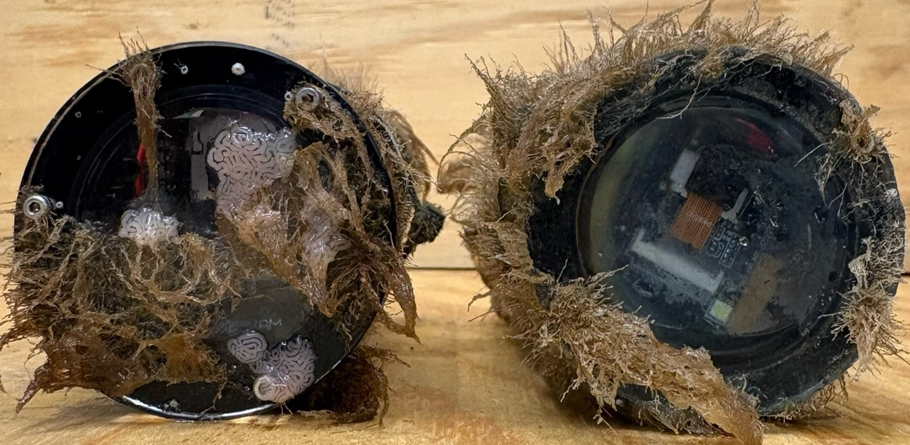
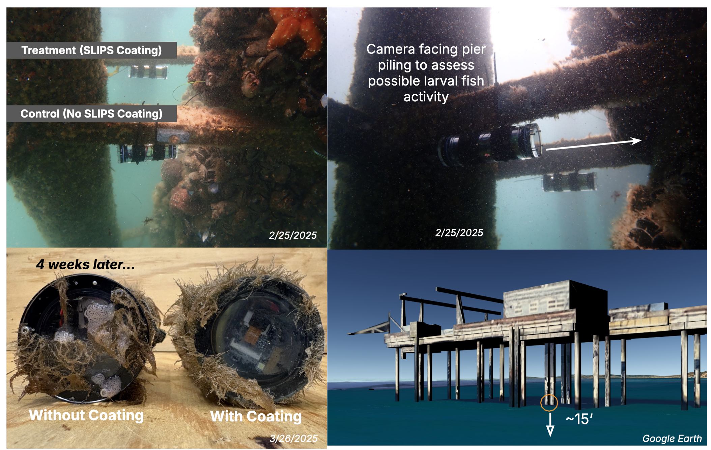
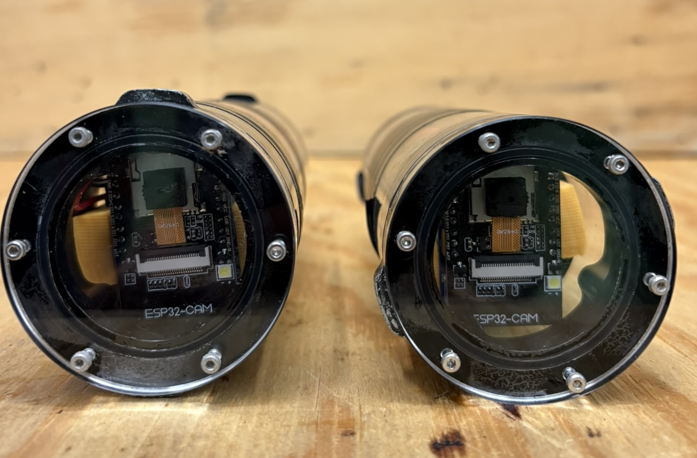
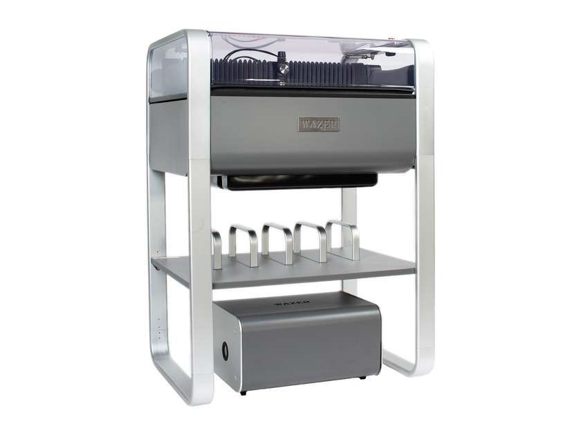
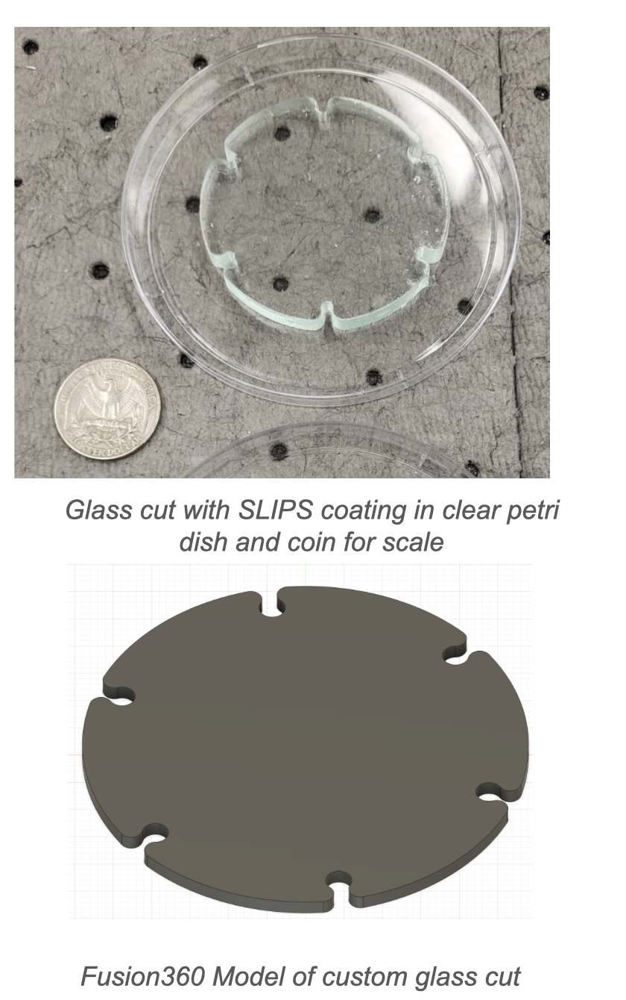
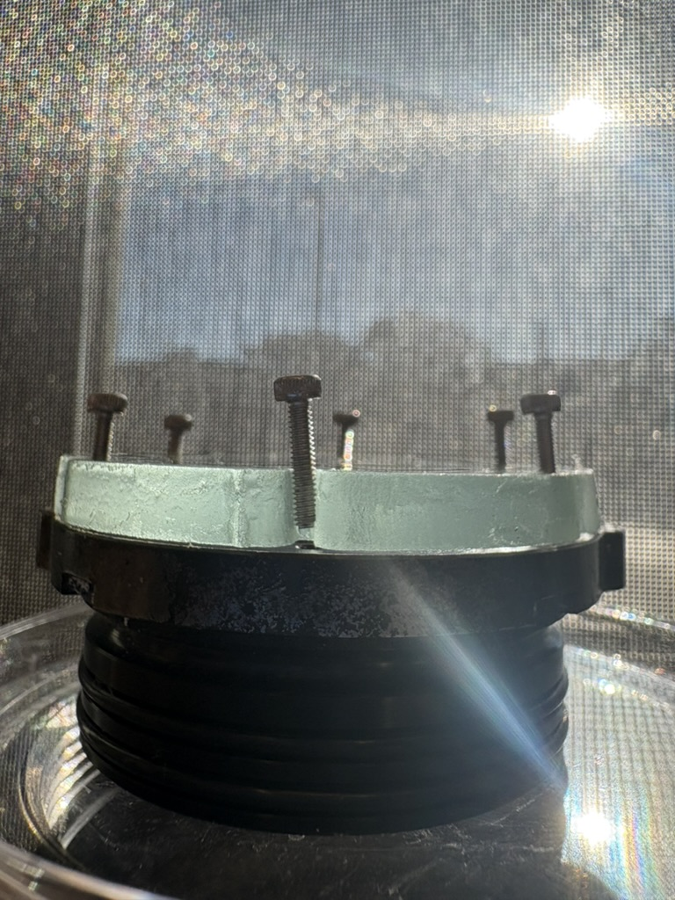
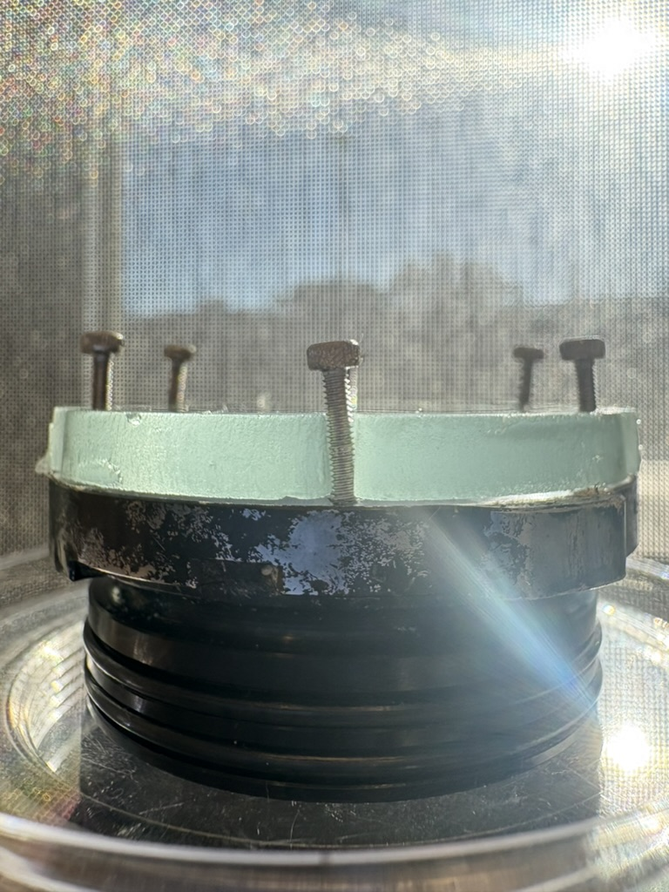
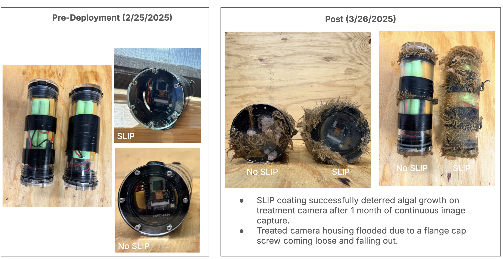
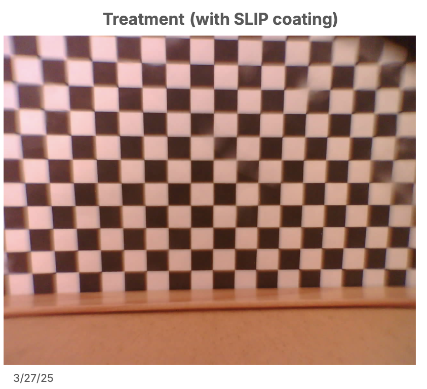
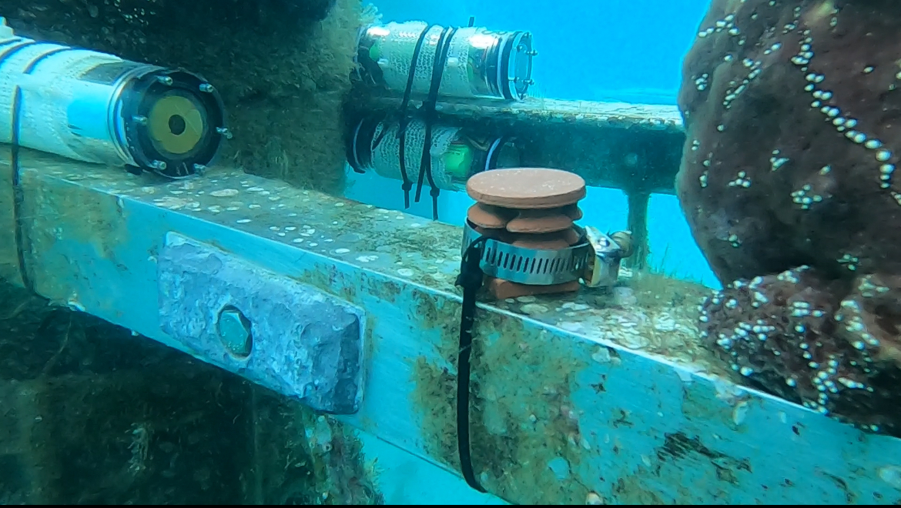

Scroll down to learn how a cross-colLaborative effort between the Thode Environmental Acoustic Lab, Coral Reef Ecophysiology and Engineering Lab and Scripps Makerspace Sandbox is keeping long term underwater cameras free of biofouling using simple, organic and nontoxic ingredients.

Long-term underwater camera deployments face a significant challenge: biofouling. The accumulation of marine organisms on camera lenses and housings degrades image quality over time, limiting the effectiveness of autonomous monitoring systems. This project develops organic, environmentally-friendly solutions to prevent biofouling without harming marine ecosystems. Traditional anti-fouling coatings often contain harmful chemicals that can leach into the marine environment. Our approach focuses on bio-inspired and organic compounds that deter settlement of fouling organisms while remaining non-toxic to marine life.

Turns out glass flanges are tricky to come by (which is required by the SLIPS coating for proper adhering) due to their fragility relative to the acrylic flange alternative. Since we are interested in using these flanges for coastal applications < 100m deep, we set out to design and microfabricate a glass flange for the 2" BR underwater housings that keep our ESP32 camera modules safe and dry (or so we hoped...)

Luckily for us, at SIO we have a state of the art Scripps Sandbox Makerspace, fully fitted with helpful humans and tools to help collaboratively design and deploy early-stage experiments such as this one. As someone who personally has near-zero experience with a WAZER Waterjet CNC Machine, I reached out to Makerspace Sandbox Director, Riley Meehan, knowing only the dimensions of the underwater housings (and therefore the flange size required) and an idea...


The WAZER waterjet CNC machine is a powerful tool the size of an inkjet printer used for cutting our custom glass flanges, and it certainly came with its own set of challenges. After getting trained (sign up here for SIO students [ref?]), we had to carefully calibrate the machine to ensure precise cuts without damaging the fragile glass (purchasedfrom a local glass shop, Encinitas Glass) whom typically make glasstop counters. We had to experiment with different cutting speeds and pressures to achieve clean edges while minimizing the risk of cracking (Thanks to Riley & co for that support). Finally, it was time to test how the cuts fared as flange caps...


Despite the wonkiness on some (not all, fortunately) of the custom cuts, we got the glass pieces prepped, coated, and depth tested in the ~27' Keck Pool. Following that test, we deployed off the pier on Febuary 25, 2025 and said a little protection blessing for our cameras admist the harsh winter conditions and surging tides typically experienced under the pier in winter months.
After a month of deployment, we observed promising results. The SLIPS-coated glass flange showed significantly less biofouling compared to the uncoated acrylic flange, which was heavily covered in algae and barnacles. The SLIPS-coated surface remained clear (Treatment figure below shows preliminary results taken in-air), providing results that suggest SLIPs can be an effective, non-toxic solution for preventing biofouling on long-term underwater cameras, potentially extending their operational lifespan and improving visual data quality for marine research. Unfortunately, a fastening screw came loose during deployment, leading to flooding of the treatment camera housing and subsequent loss of the visual data taken from the camera's perspective. For the next iteration of the experiment, we have ordered custom cuts (Peninsula Glass) and are using a more secure fastening mechanism with O-ring washers to ensure the integrity of the glass flange on the housing during data collection in winter 2026...


After seeing the potential behind this glass coatede underwater housings from a physical perspective, we were able to rebudget and purchase manufactured custom glass flanges for the next iteration of the experiment. In terms of cost, the manufactured glass flange's were $90 USD more than the WAZERjet cuts, given a batch of 15 flanges created at one time.

This experiemnt is currently underway and we'd love if you want to follow along with the results! We redployed under the pier in January 2026 with a redesigned glass flange and a more robust fastening mechanism to ensure the integrity of the camera housing and data collection. Stay tuned for updates on how the experiment is going and whether our SLIPS coating continues to keep our cameras clear of biofouling.
Check out TEAL Master's Student and lead diver Corinne Pickering's reel showing the latest deployment:
View Instagram Reel